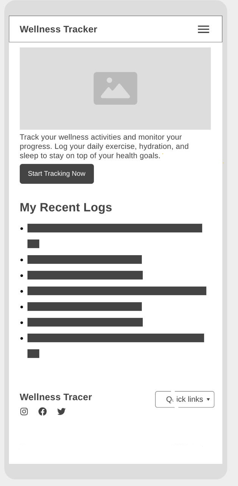
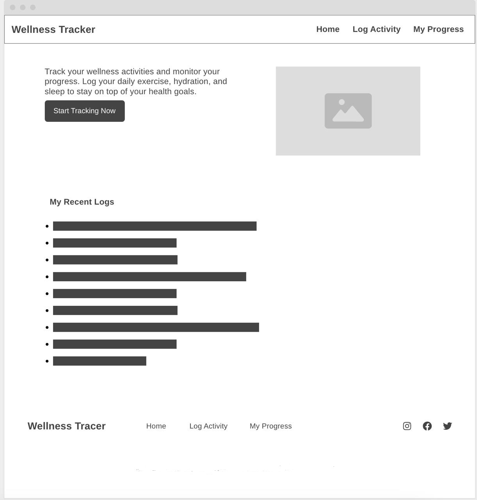

Wellness Tracker - The name reflects the purpose of the site, which is to help users log and track wellness activities like exercise, sleep, and hydration and blood pressure.
The site allows users to record and monitor their wellness activities such as exercise, sleep, and hydration. The data is stored locally, allowing users to easily track their progress over time.
Main Color: #2ecc71 (Bright Green) - Used for primary accents like buttons and headings to convey vitality.
Secondary Color: #3498db (Sky Blue) - Used for background sections and highlights for a calming effect.
Heading Font: Montserrat, sans-serif - A modern, clean font that will be used for all headings.
Body Font: Roboto, sans-serif - A sleek, legible font that will be used for body text and paragraphs.
Mobile View:
Desktop View:
